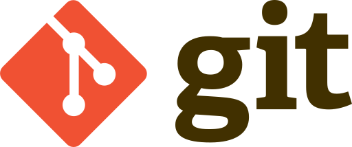

Git
Git es un sistema de control de versiones distribuido (DVCS) que permite a los desarrolladores trabajar en conjunto en un proyecto de software de manera eficiente y organizada. Git rastrea los cambios en el código fuente de un proyecto a lo largo del tiempo, lo que permite a los desarrolladores volver a versiones anteriores del código, comparar cambios y colaborar con otros desarrolladores.
Características de Git
- Seguimiento de cambios
- Ramas
- Fusiones
- Colaboración
Git Flow

Git Flow es una metodología de flujo de trabajo basada en Git que proporciona un marco para el desarrollo de software. Git Flow define una serie de ramas específicas que los desarrolladores pueden usar para organizar su trabajo. Estas ramas incluyen:
- Master: Esta rama representa la versión más reciente y estable del software.
- Develop: Esta rama representa la próxima versión del software que se lanzará.
- Feature: Estas ramas se usan para desarrollar nuevas características.
- Hotfix: Estas ramas se usan para corregir errores críticos.
- Release: Estas ramas se usan para preparar una versión del software para su lanzamiento.
Ventajas de Git Flow
- Mejora la organización del código
- Facilita la colaboración
- Reduce el riesgo de conflictos
Uso de Git Flow en nuestro desarrollo
En nuestro desarrollo utilizamos Git Flow porque nos proporciona un marco para el desarrollo de software que nos ayuda a ser más eficientes y organizados. Git Flow nos ayuda a mantener el código organizado, a facilitar la colaboración entre los desarrolladores y a reducir el riesgo de conflictos.
En concreto, Git Flow nos permite:
- Desarrollar nuevas características de manera independiente sin afectar a la versión estable del software.
- Corregir errores críticos sin afectar a las nuevas características que se están desarrollando.
- Lanzar nuevas versiones del software de manera controlada y planificada.
Flexibilidad de Git Flow
Git Flow es una metodología flexible que puede adaptarse a las necesidades específicas de cada proyecto. Sin embargo, en general, es una buena opción para proyectos que requieren un enfoque estructurado para el desarrollo de software.